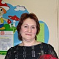

Дошкольное отделение школы № 1252
В 2015 году 14% первоклассников Школы № 1252 пришли из дошкольного отделения.
- Светлый проезд, 4А
- Малый Песчаный переулок, 4Ас1
Воспитатели
Воспитатели, которых чаще всего благодарят родители (отзывы и профили сотрудников взяты с официального сайта школы):|
Воспитатель
Макарова Анна Александровна
6 благодарностей |

Руководитель
Мухина Елена Александровна
5 благодарностей |
Воспитатель
Савельева Анна Евгеньевна
5 благодарностей |
Воспитатель
Миронова Галина Александровна
3 благодарности |
|
Воспитатель
Купцова Ольга Николаевна
2 благодарности |
Логопед
Дергачева Елена Владимировна
2 благодарности |
Логопед
Соколова Наталья Александровна
1 благодарность |
Воспитатель
Филатова Наталья Анатольевна
1 благодарность |
|
Воспитатель
Рухлова Ирина Геннадиевна
1 благодарность |
Отзывы
Данные собраны c официального сайта школы и через форму для отзывов.
Старшая дочь окончила дошкольное отделение этой школы (светлый проезд дом 4). Ребёнок изначально очень домашний с первых дней чувствовала себя в саду как дома. Адаптация прошла мягко. Не думала, что дети могут так любить воспитателей, а воспитатели так переживать за детей. Нельзя описать словами чувства благодарности ... Огромное спасибо от всей души воспитателям Анне Евгеньевне и Галине Александровне и помощнику воспитателей Татьяне Петровне. На выпускном всем было грустно. Но мне радостно, потому что и младшие детки окончат этот садик. Все устраивает. Спасибо руководителю Елене Александровне - обстановка домашняя , а ведь именно это и нужно нашим маленьким детям. Спасибо. Всем рекомендую!
Отзыв о структурном подразделении д/с 1386, территория № 2.
Очень хочется выразить слова благодарности воспитателю Макаровой Анне Александровне. С ее приходом в детский сад № 1386 (бывший д/с № 807) в 2014 – 2015 уч. году в группе развеялся мрак созданный предыдущем воспитателем. Анна Александровна одарила каждого ребенка любовью, заботой, терпением и конечно же воспитанием. Создала прекрасные условия для образования, творчества и общения детей. Сплотила детский коллектив, научила дружить, уважать друг друга, достойно выходить из спорных ситуаций. Никогда не оскорбляла, не унижала детей, они понимали ее в прямом слове с полу взгляда. Ее метод «пять правил» работает изумительно!
Про родителей тоже не забывала, всегда ответит на все вопросы, внесет рекомендации по воспитанию и общению с детьми, похвалит, а кому надо сделает корректное замечание. Так же просьбы и замечания родителей никогда не оставались без должного внимания, все решалось в кротчайшие сроки. Это педагог с большой буквы.
Благодаря помощнику воспитателя Анне Петровне, в группе всегда идеальная чистота и порядок. Что очень важно для каждого родителя.
Отводя ребенка в детский сад, я всегда была уверенна, что с детьми рядом настоящая команда из профессионалов, а точнее сказать вторые мамы, поэтому я со спокойным сердцем оставляла своего ребенка, так как была уверена в том, что он будет услышан, накормлен, присмотрен, и что самое главное обучен и правильно воспитан. СПАСИБО ВАМ!!!
Очень хочется выразить слова благодарности воспитателю Макаровой Анне Александровне. С ее приходом в детский сад № 1386 (бывший д/с № 807) в 2014 – 2015 уч. году в группе развеялся мрак созданный предыдущем воспитателем. Анна Александровна одарила каждого ребенка любовью, заботой, терпением и конечно же воспитанием. Создала прекрасные условия для образования, творчества и общения детей. Сплотила детский коллектив, научила дружить, уважать друг друга, достойно выходить из спорных ситуаций. Никогда не оскорбляла, не унижала детей, они понимали ее в прямом слове с полу взгляда. Ее метод «пять правил» работает изумительно!
Про родителей тоже не забывала, всегда ответит на все вопросы, внесет рекомендации по воспитанию и общению с детьми, похвалит, а кому надо сделает корректное замечание. Так же просьбы и замечания родителей никогда не оставались без должного внимания, все решалось в кротчайшие сроки. Это педагог с большой буквы.
Благодаря помощнику воспитателя Анне Петровне, в группе всегда идеальная чистота и порядок. Что очень важно для каждого родителя.
Отводя ребенка в детский сад, я всегда была уверенна, что с детьми рядом настоящая команда из профессионалов, а точнее сказать вторые мамы, поэтому я со спокойным сердцем оставляла своего ребенка, так как была уверена в том, что он будет услышан, накормлен, присмотрен, и что самое главное обучен и правильно воспитан. СПАСИБО ВАМ!!!
Всем доброго дня! Хотелось бы выразить благодарность руководителю, а также воспитателям и логопеду группы №4 «Солнышко» детского сада по адресу Светлый проезд, 4А. Моя дочка посещала сад в 2014-2015 учебном году. В этот детский садик мы перешли как в специализированный из сада по месту жительства, после полутора лет безуспешных попыток преодолеть заикание у нашей дочки Верочки. Дочке с первого дня очень понравилось в группе, в садик всегда бежала с радостью. Воспитатели, Ирина Геннадьевна и Ольга Николаевна – чуткие, заботливые, внимательные, заинтересованные в результате. Атмосфера в группе спокойная, доброжелательная, что очень важно для деток, у которых проблемы с речью. Логопед Елена Владимировна – прекрасный специалист, занимается с заикающимися детьми в группе и индивидуально. Кабинет логопеда находится прямо в группе, что очень удобно. Специализированную логопедическую помощь получают даже самые маленькие детки (от трех лет – группа смешанная), тогда как в обычном садике детей направляют на логопедическую комиссию только с 5 лет. Год пребывания в садике принес прекрасные результаты – от заикания сильной степени остались достаточно редкие запинки в речи. Ребенка приходилось возить из другого района, но результат того стоит! Огромная благодарность замечательному коллективу детского сада во главе с заведующей Еленой Александровной!
С уважением,
семья Курлюковых
С уважением,
семья Курлюковых
Добрый день! Спешу поделиться своими чувствами по отношению к детскому саду на ул.Светлый проезд, который теперь является Дошкольным отделением ГБОУ Школа №1252 имени Сервантеса, и эмоциями, связанными с расставанием и переходом в другой детсад. Причина для этого была банальной – переезд в другой район Москвы. Мы долго не решались на смену детсада и все думали, что будем пытаться возить ребенка издалека. И когда все-таки приняли такое решение, долго не знали, как подготовить и как сказать об этом ребенку – понимали, что переживания будут очень сильными. Сложно подобрать слова, которые бы передали все чувства, которые испытывает ребенок и любящие, и переживающие за него родители, когда приходится прощаться с добрыми, любимыми, родными воспитателями, со старыми друзьями, со стенами детского сада, в котором ребенок рос с двух лет… и вот так рано встречаться с неизбежностью перемен в жизни…
Забегая вперед скажу, дорогие наши воспитатели, мы очень вас любим и очень будем скучать!
Мой сын посещал это ДОУ с 2011 года. В ясельной группе ему как мама была Филатова Наталья Анатольевна, которая умеет работать с самыми маленькими детьми, находит к ним подход и оставляет родителей спокойными за своих детей. Спасибо ей большое!
В младшей группе №9 воспитателями у сына стали Савельева Анна Евгеньевна и Миронова Галина Александровна и с тех пор, на протяжении трех лет мы знали, что оставляем ребенка в надежных руках грамотных специалистов с многолетним стажем работы с детьми.
Искренние и глубокие слова уважения и благодарности мы хотим высказать Галине Александровне. Спасибо ей за ее строгость и внутренний стержень, за ее выдержку и дисциплину, которые всенепременно воспитывают и в наших детях способность к самоконтролю и прививают чувство ответственности за свои поступки. Спасибо ей за системный подход в обучении и за индивидуальное участие в развитии каждого ребенка в группе.
Мы выражаем огромную благодарность воспитателю Анне Евгеньевне за ее доброту, за ее теплое отношение к детям, за любовь, которую она не пыталась скрыть и искренне радовалась каждой встрече после долгих очередных праздников. Мой сын очень любил заниматься с Анной Евгеньевной на творческих занятиях: рисовать, лепить, шить, валять, строить, клеить, мастерить – чем только они не занимались! Спасибо Анне Евгеньевне и за подход к родителям, она быстро находит общий язык со всеми мамами и папами, помогает мудрым советом в разрешении спорных ситуаций.
Спасибо нашей няне – помощнице воспитателей - Татьяне Петровне за ее доброту, ласку, понимание и отзывчивость.
И искренние слова глубокой благодарности хочется высказать заведующей ДО ГБОУ Школа №1252 имени Сервантеса Мухиной Елене Александровне за ее высокий профессионализм, за ее человеческие качества и за индивидуальный подход к проблемам каждой семьи, доверяющей своих детей этому детскому саду.
Спасибо Вам! Желаем Вам здоровья и процветания!
С уважением, мама Бондарева Богдана
Бондарева Светлана Сергеевна
Забегая вперед скажу, дорогие наши воспитатели, мы очень вас любим и очень будем скучать!
Мой сын посещал это ДОУ с 2011 года. В ясельной группе ему как мама была Филатова Наталья Анатольевна, которая умеет работать с самыми маленькими детьми, находит к ним подход и оставляет родителей спокойными за своих детей. Спасибо ей большое!
В младшей группе №9 воспитателями у сына стали Савельева Анна Евгеньевна и Миронова Галина Александровна и с тех пор, на протяжении трех лет мы знали, что оставляем ребенка в надежных руках грамотных специалистов с многолетним стажем работы с детьми.
Искренние и глубокие слова уважения и благодарности мы хотим высказать Галине Александровне. Спасибо ей за ее строгость и внутренний стержень, за ее выдержку и дисциплину, которые всенепременно воспитывают и в наших детях способность к самоконтролю и прививают чувство ответственности за свои поступки. Спасибо ей за системный подход в обучении и за индивидуальное участие в развитии каждого ребенка в группе.
Мы выражаем огромную благодарность воспитателю Анне Евгеньевне за ее доброту, за ее теплое отношение к детям, за любовь, которую она не пыталась скрыть и искренне радовалась каждой встрече после долгих очередных праздников. Мой сын очень любил заниматься с Анной Евгеньевной на творческих занятиях: рисовать, лепить, шить, валять, строить, клеить, мастерить – чем только они не занимались! Спасибо Анне Евгеньевне и за подход к родителям, она быстро находит общий язык со всеми мамами и папами, помогает мудрым советом в разрешении спорных ситуаций.
Спасибо нашей няне – помощнице воспитателей - Татьяне Петровне за ее доброту, ласку, понимание и отзывчивость.
И искренние слова глубокой благодарности хочется высказать заведующей ДО ГБОУ Школа №1252 имени Сервантеса Мухиной Елене Александровне за ее высокий профессионализм, за ее человеческие качества и за индивидуальный подход к проблемам каждой семьи, доверяющей своих детей этому детскому саду.
Спасибо Вам! Желаем Вам здоровья и процветания!
С уважением, мама Бондарева Богдана
Бондарева Светлана Сергеевна
Добрый день!
Хотела бы поделиться впечатлениями о дошкольном отделении на Светлом проезде, д.4а ( бывш. Сад # 1386).
Я мама двух девочек.
Старшая дочка в прошлом году успешно закончила логопедическую группу#2. Младшая девочка только в этом году начала свой путь в этом чудесном учреждении.
Отдельную благодарность хотела выразить заведующей подразделения Мухиной Елене Александровне. Она всегда с улыбкой встречает родителей и помогает в решении нужных вопросов, разъяснения порядок, отвечает на вопросы. Даже если Елена Александровна очень занята, она всегда отложит дела и уделит время родителям.
Отдельное спасибо и низкий поклон всему нашему педагогическому коллективу второй логопедической группы. Наталья Александровна, Ирина Алексеевна и Любовь Ивановна(очень жаль было расстаться с воспитателями), Надежда Валентиновна! Вы те люди, которые помогли и помогаете расти нашим деткам Настоящими Людьми! Ваш труд бесценен! Ваши многолетние наработки, как в учебе, так и в творчестве, настолько грамотные и продуктивные, что дети без дополнительной подготовки идут в школы и учатся там на одни пятерки! Когда попадаешь к Вам в группу, то заражаешься этой аурой и оптимизмом моментально!
Галина Геннадьевна-музыкальный руководитель в нашей группе в детском саду! Как здорово Вы организовываете все праздники!!! За 3 года ни один утренник не повторился(!). Всегда много танцев, песен, постановок, юморесок. Всегда со слезами на глазах от счастья выходим из музыкального зала после праздников!
Галина Геннадьевна отличный организатор, музыкальный руководитель и просто добрый и всегда улыбчивый человек! Моя дочь после Ваших занятий успешно обучается в музыкально-хоровой школе, а также занимается по классу фортепиано.
Еще раз огромное спасибо этим уникальным, добрым, отзывчивым людям за их труд, оптимизм, терпение и улыбки!!!
С Уважением,
мама Павловой Анастасии и Павловой Елизаветы.
Хотела бы поделиться впечатлениями о дошкольном отделении на Светлом проезде, д.4а ( бывш. Сад # 1386).
Я мама двух девочек.
Старшая дочка в прошлом году успешно закончила логопедическую группу#2. Младшая девочка только в этом году начала свой путь в этом чудесном учреждении.
Отдельную благодарность хотела выразить заведующей подразделения Мухиной Елене Александровне. Она всегда с улыбкой встречает родителей и помогает в решении нужных вопросов, разъяснения порядок, отвечает на вопросы. Даже если Елена Александровна очень занята, она всегда отложит дела и уделит время родителям.
Отдельное спасибо и низкий поклон всему нашему педагогическому коллективу второй логопедической группы. Наталья Александровна, Ирина Алексеевна и Любовь Ивановна(очень жаль было расстаться с воспитателями), Надежда Валентиновна! Вы те люди, которые помогли и помогаете расти нашим деткам Настоящими Людьми! Ваш труд бесценен! Ваши многолетние наработки, как в учебе, так и в творчестве, настолько грамотные и продуктивные, что дети без дополнительной подготовки идут в школы и учатся там на одни пятерки! Когда попадаешь к Вам в группу, то заражаешься этой аурой и оптимизмом моментально!
Галина Геннадьевна-музыкальный руководитель в нашей группе в детском саду! Как здорово Вы организовываете все праздники!!! За 3 года ни один утренник не повторился(!). Всегда много танцев, песен, постановок, юморесок. Всегда со слезами на глазах от счастья выходим из музыкального зала после праздников!
Галина Геннадьевна отличный организатор, музыкальный руководитель и просто добрый и всегда улыбчивый человек! Моя дочь после Ваших занятий успешно обучается в музыкально-хоровой школе, а также занимается по классу фортепиано.
Еще раз огромное спасибо этим уникальным, добрым, отзывчивым людям за их труд, оптимизм, терпение и улыбки!!!
С Уважением,
мама Павловой Анастасии и Павловой Елизаветы.
Хотелось бы сказать слова благодарности всем сотрудникам ДО по адресу Светлый проезд, д. 4А, и в особенности воспитателям группы по заиканию Купцовой Ольге Николаевне, Рухловой Ирине Геннадиевне, логопеду Дергачевой Елене Владимировне, няне Смирновой Светлане Владимировне.
Моему ребенку логопед давал направление в этот д/с давно, но я долго не решалась перевести его, т.к. думала, что для него будет тяжелым переход в другой садик. Как же я ошибалась! С самого первого дня он был окружен вниманием и заботой воспитателей, которые стали ему «вторыми мамами». Когда он ходил в другой д/с, он каждый раз придумывал различные причины, чтобы не идти туда. Здесь же – другое дело! Если он заболевал, и я хотела оставить его дома, он не соглашался, говоря: «Я пойду в детский сад! У меня там столько дел!». В начале сентября его заикание было очень сильным, но спустя несколько недель его речь стала выправляться. И теперь только сильно прислушиваясь можно понять, что у него есть запинки.
Самое ценное в этом саду – его атмосфера, которую создает КАЖДЫЙ, кто здесь работает. Именно поэтому туда БЕГУТ дети!
Теперь я очень жалею, что мы ходили сюда только один год. В этом году мы идем в школу, и очень здорово, что его подготовили и к школе, и к жизни в коллективе, научили быть уверенным в себе.
Спасибо всем, кто приносит сюда каждый день частичку своей души!
Огромное Вам СПАСИБО!
Моему ребенку логопед давал направление в этот д/с давно, но я долго не решалась перевести его, т.к. думала, что для него будет тяжелым переход в другой садик. Как же я ошибалась! С самого первого дня он был окружен вниманием и заботой воспитателей, которые стали ему «вторыми мамами». Когда он ходил в другой д/с, он каждый раз придумывал различные причины, чтобы не идти туда. Здесь же – другое дело! Если он заболевал, и я хотела оставить его дома, он не соглашался, говоря: «Я пойду в детский сад! У меня там столько дел!». В начале сентября его заикание было очень сильным, но спустя несколько недель его речь стала выправляться. И теперь только сильно прислушиваясь можно понять, что у него есть запинки.
Самое ценное в этом саду – его атмосфера, которую создает КАЖДЫЙ, кто здесь работает. Именно поэтому туда БЕГУТ дети!
Теперь я очень жалею, что мы ходили сюда только один год. В этом году мы идем в школу, и очень здорово, что его подготовили и к школе, и к жизни в коллективе, научили быть уверенным в себе.
Спасибо всем, кто приносит сюда каждый день частичку своей души!
Огромное Вам СПАСИБО!
Если вы нашли ошибку или неточность, пожалуйста, сообщите нам об этом.
Ученик, выпускник или родитель? Оставьте отзыв о детском саде.